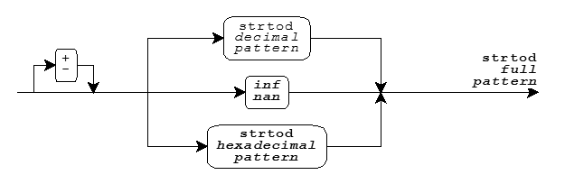
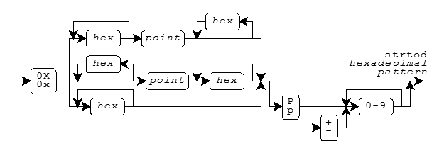
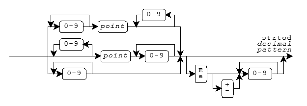
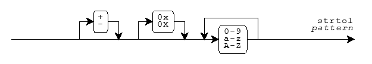

<stdlib.h>EXIT_FAILURE
· EXIT_SUCCESS
· MB_CUR_MAX
· NULL
· RAND_MAX
abort
· abs
· atexit
· at_quick_exit
· atof
· atoff
· atoi
· atol
· atoll
· bsearch
· calloc
· div
· div_t
· _Exit
· exit
· free
· getargc
· getargv
· labs
· llabs
· ldiv
· ldiv_t
· lldiv
· lldiv_t
· malloc
· malloc_managed_size
· malloc_stats
· malloc_stats_fast
· malloc_usable_size
· mblen
· mbstowcs
· mbtowc
· memalign
· qsort
· quick_exit
· rand
· rand_r
· realloc
· reallocalign
· sceLibcSetHeapInitError
· size_t
· srand
· strtod
· strtof
· strtol
· strtold
· strtoll
· strtoul
· strtoull
· wchar_t
· wcstombs
· wctomb
abort_handler_s
· bsearch_s
· constraint_handler_t
· errno_t
· ignore_handler_s
· mbstowcs_s
· qsort_s
· rsize_t
· set_constraint_handler_s
· wcstombs_s
· wctomb_s
Include the standard header <stdlib.h> to declare an
assortment of useful functions and to define the macros and types
that help you use them.
/* MACROS */
#define EXIT_FAILURE <rvalue integer expression>
#define EXIT_SUCCESS <rvalue integer expression>
#define MB_CUR_MAX <rvalue integer expression >= 1>
#define NULL <either 0, 0L, or (void *)0> [0 in C++]
#define RAND_MAX <integer constant expression >= 32,767>
/* TYPES */
typedef struct {
int quot, rem;
} div_t;
typedef struct {
long quot, rem;
} ldiv_t;
typedef struct { [added with C99]
long long quot, rem;
} lldiv_t;
struct malloc_managed_size { [non-standard]
size_t max_system_size;
size_t current_system_size;
size_t max_inuse_size;
size_t current_inuse_size;
size_t reserved[4];
};
typedef ui-type size_t;
typedef i-type wchar_t; [keyword in C++]
/* FUNCTIONS */
int abs(int i);
long abs(long i); [C++ only]
long long abs(long long i); [C++ only, added with C99]
long long llabs(long long i); [added with C99]
long labs(long i);
div_t div(int numer, int denom);
ldiv_t div(long numer, long denom); [C++ only]
lldiv_t div(long long numer, long long denom); [C++ only, added with C99]
lldiv_t lldiv(long long numer, long long denom); [added with C99]
ldiv_t ldiv(long numer, long denom);
int rand(void);
void srand(unsigned int seed);
int rand_r(unsigned int *seedp); [non-standard]
double atof(const char *s);
float atoff(const char *s); [non-standard]
int atoi(const char *s);
long atol(const char *s);
long long atoll(const char *s); [added with C99]
double strtod(const char *restrict s, char **restrict endptr);
float strtof(const char *restrict s, char **restrict endptr); [added with C99]
long double strtold(const char *restrict s,
char **restrict endptr); [added with C99]
long long strtoll(const char *restrict s, char **restrict endptr,
int base); [added with C99]
unsigned long long strtoull(const char *restrict s, char **restrict endptr,
int base); [added with C99]
long strtol(const char *restrict s, char **restrict endptr, int base);
unsigned long strtoul(const char *restrict s, char **restrict endptr,
int base);
void *calloc(size_t nelem, size_t size);
void free(void *ptr);
void *malloc(size_t size);
void *memalign(size_t boundary, size_t size); [non-standard]
void *realloc(void *ptr, size_t size);
void *reallocalign(void *ptr, size_t size, size_t boundary); [non-standard]
int malloc_stats(struct malloc_managed_size *mmsize); [non-standard]
int malloc_stats_fast(struct malloc_managed_size *mmsize); [non-standard]
size_t malloc_usable_size(void* p); [non-standard]
void sceLibcSetHeapInitError(unsigned int err_number); [non-standard]
int mblen(const char *s, size_t n);
size_t mbstowcs(wchar_t *restrict wcs, const char *restrict s, size_t n);
int mbtowc(wchar_t *restrict pwc, const char *restrict s, size_t n);
size_t wcstombs(char *restrict s, const wchar_t *restrict wcs, size_t n);
int wctomb(char *s, wchar_t wchar);
void _Exit(int status) noexcept; [added with C99]
void exit(int status); [does not return]
void abort(void) noexcept; [does not return]
int getargc(void); [non-standard]
char **getargv(void); [non-standard]
extern "C++"
int atexit(void (*func)(void)) noexcept; [C++ only]
extern "C" [C++ only]
int atexit(void (*func)(void)) noexcept;
void quick_exit(int status) noexcept; [does not return] [added with C++11]
extern "C++"
int at_quick_exit(void (*func)(void)) noexcept; [added with C++11]
extern "C" [C++ only]
int at_quick_exit(void (*func)(void)) noexcept; [added with C++11]
extern "C++"
void *bsearch(const void *key, const void *base,
size_t nelem, size_t size,
int (*cmp)(const void *ck, const void *ce)); [C++ only]
extern "C" [C++ only]
void *bsearch(const void *key, const void *base,
size_t nelem, size_t size,
int (*cmp)(const void *ck, const void *ce));
extern "C++"
void qsort(void *base, size_t nelem, size_t size,
int (*cmp)(const void *e1, const void *e2)); [C++ only]
extern "C" [C++ only]
void qsort(void *base, size_t nelem, size_t size,
int (*cmp)(const void *e1, const void *e2));
#if __STDC_WANT_LIB_EXT1__ [added with TR24731]
typedef void (*constraint_handler_t)(const char *restrict s,
void *restrict p, errno_t errcode);
typedef int errno_t;
typedef size_t rsize_t;
constraint_handler_t set_constraint_handler_s(
constraint_handler_t new_hand);
void abort_handler_s(const char *restrict s,
void *restrict p, errno_t errcode);
void ignore_handler_s(const char *restrict s,
void *restrict p, errno_t errcode);
errno_t wctomb_s(int *restrict pstat,
char *restrict s, rsize_t maxsize, wchar_t wchar);
errno_t mbstowcs_s(size_t *restrict psize,
wchar_t *restrict wcs, rsize_t maxsize,
const char *restrict s, rsize_t n);
errno_t wcstombs_s(size_t *restrict psize,
char *restrict s, rsize_t maxsize,
const wchar_t *restrict wcs, rsize_t n);
extern "C++"
void *bsearch_s(const void *key, const void *base,
rsize_t nelem, rsize_t size,
int (*cmp)(const void *ck, const void *ce, void *context),
void *context); [C++ only]
extern "C" [C++ only]
void *bsearch_s(const void *key, const void *base,
rsize_t nelem, rsize_t size,
int (*cmp)(const void *ck, const void *ce, void *context),
void *context);
extern "C++"
errno_t qsort_s(void *base, rsize_t nelem, rsize_t size,
int (*cmp)(const void *e1, const void *e2, void *context),
void *context); [C++ only]
extern "C" [C++ only]
errno_t qsort_s(void *base, rsize_t nelem, rsize_t size,
int (*cmp)(const void *e1, const void *e2, void *context),
void *context);
#endif /* __STDC_WANT_LIB_EXT1__ */
abortvoid abort(void) noexcept; [does not return]
The function is available only in "Development Mode" of Development Kit. See "Programming Startup Guide" for details.
The function causes abnormal
program termination and reports unsuccessful termination to the target
environment. The function calls
_Exit(EXIT_FAILURE),
to report unsuccessful termination with
EXIT_FAILURE.
abort never returns to its caller.
abort_handler_svoid abort_handler_s(const char *s, void *p,
errno_t errcode); [added with TR24731]
The function
writes mesg to the standard error stream and calls
abort.
It can serve as a
constraint handler.
absint abs(int i); long abs(long i); [C++ only] long long abs(long long i); [C++ only, added with C99]
The function returns the absolute value of
i, |i|. The version that accepts
a long argument behaves the same as
labs. The version that accepts
a long long argument behaves the same as
llabs.
atexitextern "C++"
int atexit(void (*func)(void)) noexcept; [C++ only]
extern "C" [C++ only]
int atexit(void (*func)(void)) noexcept;
The function registers the function whose address is func
to be called by
exit (or when
main returns)
and returns zero if successful.
The functions are called in reverse order of registry. You can register at
least 32 functions.
Furthermore, in C++, if control leaves a called function because
it fails to handle a thrown exception, terminate
is called.
In C++, if static variables in functions and global variables have class types, their destructors are registered using this function. They are counted as the number of registered functions. Whether the registrations are successful or not is not tested. Notice therefore that the destructor will just not be invoked in the failure case.
The function is thread safe.
at_quick_exitextern "C++"
int at_quick_exit(void (*func)(void)) noexcept; [added with C++11]
extern "C" [C++ only]
int at_quick_exit(void (*func)(void)) noexcept; [added with C++11]
The function registers the function whose address is func
to be called by
quick_exit
and returns zero if successful.
The functions are called in reverse order of registry. You can register at
least 32 functions.
Furthermore, in C++, if control leaves a called function because
it fails to handle a thrown exception, terminate
is called.
The function is thread safe.
atofdouble atof(const char *s);
The function converts the initial characters of the string s
to an equivalent value x of type double and then returns
x. The conversion is the same as for
strtod(s, 0),
except that a value is not necessarily stored in
errno
if a conversion error occurs.
atofffloat atoff(const char *s); [non-standard]
The function converts the initial characters of the string s
to an equivalent value x of type float and then returns
x. The conversion is the same as for
strtof(s, 0),
except that a value is not necessarily stored in
errno
if a conversion error occurs.
atoiint atoi(const char *s);
The function converts the initial characters of the string s
to an equivalent value x of type int and then returns
x. The conversion is the same as for
(int)strtol(s, 0, 10),
except that a value is not necessarily stored in
errno
if a conversion error occurs.
atollong atol(const char *s);
The function converts the initial characters of the string s
to an equivalent value x of type long and then returns
x. The conversion is the same as for
strtol(s, 0, 10),
except that a value is not necessarily stored in
errno
if a conversion error occurs.
atolllong long atoll(const char *s); [added with C99]
The function converts the initial characters of the string s
to an equivalent value x of type long long and then returns
x. The conversion is the same as for
strtoll(s, 0, 10),
except that a value is not necessarily stored in
errno
if a conversion error occurs.
bsearchextern "C++"
void *bsearch(const void *key, const void *base,
size_t nelem, size_t size,
int (*cmp)(const void *ck, const void *ce)); [C++ only]
extern "C" [C++ only]
void *bsearch(const void *key, const void *base,
size_t nelem, size_t size,
int (*cmp)(const void *ck, const void *ce));
The function searches an array of ordered values and returns
the address of an array element that equals the search key key
(if one exists); otherwise, it returns a null pointer. The array consists
of nelem elements, each of size bytes,
beginning with the element whose address is base.
bsearch calls the comparison function whose address is
cmp to compare the search key with elements of the array. The
comparison function must return:
ck is less than the
array element cebsearch assumes that the array elements are in nondescending
order according to the same comparison rules that are used by the
comparison function.
bsearch_sextern "C++"
void *bsearch_s(const void *key, const void *base,
rsize_t nelem, rsize_t size,
int (*cmp)(const void *ck, const void *ce, void *context),
void *context); [C++ only]
extern "C" [C++ only]
void *bsearch_s(const void *key, const void *base,
rsize_t nelem, rsize_t size,
int (*cmp)(const void *ck, const void *ce, void *context),
void *context); [added with TR24731]
A runtime constraint violation occurs if:
nelem is greater than
RSIZE_MAXsize is greater than
RSIZE_MAXnelem is nonzero and key is a null pointernelem is nonzero and base is a null pointernelem is nonzero and cmp is a null pointerIf such a violation occurs, the function returns a null pointer.
Otherwise, the function searches an array of ordered values and returns
the address of an array element that equals the search key key
(if one exists); otherwise, it returns a null pointer. The array consists
of nelem elements, each of size bytes,
beginning with the element whose address is base.
bsearch calls the comparison function whose address is
cmp to compare the search key with elements of the array,
passing context as the third argument.
The comparison function must return:
ck is less than the
array element cebsearch assumes that the array elements are in nondescending
order according to the same comparison rules that are used by the
comparison function.
callocvoid *calloc(size_t nelem, size_t size);
The function allocates an array object containing nelem
elements each of size size, stores zeros in all bytes of the
array, and returns the address of the first element of the array if
successful; otherwise, it returns a null pointer. You can safely convert
the return value to an object pointer of any type whose size in bytes
is not greater than size.
The allocated object is guaranteed to be 16-byte aligned.
Even if nelem or size is zero, the function allocates a space, but the program cannot use it.
This function is replaceable. See "Memory Management Function Replacements of the C and C++ Standard Libraries: Tutorial" and "Memory Management Function Replacements of the C and C++ Standard Libraries: Reference" for details.
constraint_handler_ttypedef void (*constraint_handler_t(const char *restrict s,
void *restrict p, errno_t errcode); [added with TR24731]
The type describes a pointer to a function suitable for use as a constraint handler.
divdiv_t div(int numer, int denom); ldiv_t div(long numer, long denom); [C++ only] lldiv_t div(long long numer, long long denom); [C++ only, added with C99]
The function divides numer by denom and returns
both quotient and remainder in the structure
result x, if the quotient can be represented.
The structure member x.quot
is the algebraic quotient truncated toward zero.
The structure member x.rem is the remainder, such
that numer == x.quot*denom + x.rem.
div_ttypedef struct {
int quot, rem;
} div_t;
The type is the structure type returned by the function
div.
The structure contains members that represent the quotient
(quot) and remainder (rem)
of a signed integer division with operands of type int. The
members shown above can occur in either order.
errno_ttypedef int errno_t; [added with TR24731]
The type is a synonym for int, used to represent
a value that can be stored in
errno.
exitvoid exit(int status); [does not return]
The function is available only in "Development Mode" of Development Kit. See "Programming Startup Guide" for details.
The function causes normal program termination to occur
and returns control to the target environment. If
status is zero or
EXIT_SUCCESS,
the program reports successful termination. If status is
EXIT_FAILURE, the
program reports unsuccessful termination. An implementation can define
additional values for status.
This function executes the following process in that order, before it returns control to the target environment.
atexit, including the global destructors.It is not allowed to call this function from the module_exit function of a PRX.
exit never returns to its caller.
_Exitvoid _Exit(int status) noexcept; [does not return] [added with C99]
The function is available only in "Development Mode" of Development Kit. See "Programming Startup Guide" for details.
The function causes normal program termination to occur
and returns control to the target environment. The value of
status has the same effect as for a call to
exit. The function does not
call functions registered by
atexit.
This function executes the following process, before it returns control to the target environment.
_Exit never returns to its caller.
EXIT_FAILURE#define EXIT_FAILURE <rvalue integer expression>
The macro yields the value of the status argument to
exit
that reports unsuccessful termination.
EXIT_SUCCESS#define EXIT_SUCCESS <rvalue integer expression>
The macro yields the value of the status argument to
exit
that reports successful termination.
freevoid free(void *ptr);
If ptr is not a null pointer, the function deallocates
the object whose address is ptr; otherwise, it does nothing.
You can deallocate only objects that you first allocate by calling
the standard memory management functions
(malloc, calloc, memalign, realloc, reallocalign).
If ptr was not allocated or already freed, then free
will cause the current program to abort.
This function is replaceable. See "Memory Management Function Replacements of the C and C++ Standard Libraries: Tutorial" and "Memory Management Function Replacements of the C and C++ Standard Libraries: Reference" for details.
getargcint getargc(void); [non-standard]
The function returns the value that will be passed to main() via parameter argc.
NOTE: The function can be called from global constructors in the C++ programming language.
getargvchar **getargv(void); [non-standard]
The function returns the value that will be passed to main() via parameter argv.
NOTE: The function can be called from global constructors in the C++ programming language. The content of argv cannot be modified.
ignore_handler_svoid ignore_handler_s(const char *s, void *p,
errno_t errcode); [added with TR24731]
The function simply returns. It can serve as a constraint handler.
labslong labs(long i);
The function returns the absolute value of i,
|i|, the same as
abs.
llabslong long llabs(long long i); [added with C99]
The function returns the absolute value of i,
|i|, the same as
abs.
ldivldiv_t ldiv(long numer, long denom);
The function divides numer by denom and returns
both quotient and remainder in the structure
result x, if the quotient can be represented.
The structure member x.quot
is the algebraic quotient truncated toward zero.
The structure member x.rem is the remainder, such
that numer == x.quot*denom + x.rem.
lldivlldiv_t lldiv(long long numer, long long denom); [added with C99]
The function divides numer by denom and returns
both quotient and remainder in the structure
result x, if the quotient can be represented.
The structure member x.quot
is the algebraic quotient truncated toward zero.
The structure member x.rem is the remainder, such
that numer == x.quot*denom + x.rem.
ldiv_ttypedef struct {
long quot, rem;
} ldiv_t;
The type is the structure type returned by the function
ldiv.
The structure contains members that represent the quotient
(quot) and remainder (rem)
of a signed integer division with operands of type long. The
members shown above can occur in either order.
lldiv_ttypedef struct { [added with C99]
long long quot, rem;
} lldiv_t;
The type is the structure type returned by the function
lldiv.
The structure contains members that represent the quotient
(quot) and remainder (rem)
of a signed integer division with operands of type long long. The
members shown above can occur in either order.
mallocvoid *malloc(size_t size);
The function allocates an object of size size, and returns
the address of the object if successful; otherwise, it returns a null
pointer. The values stored in the object are indeterminate. You can
safely convert the return value to an object pointer of any type whose
size is not greater than size.
The allocated object is guaranteed to be 16-byte aligned.
Malloc is based on dlmalloc which is written by Doug Lea. See A Memory Allocator for the detail of dlmalloc.
Even if size is zero, the function allocates a space, but the program cannot use it.
Memory blocks allocated by kernel are assigned as a malloc heap.
The unit size allocated by kernel is 64KiB by default.
Define global variable sceLibcHeapUnitSize1MiB and specify a non-zero value as shown in the example below to change the unit size to 1MiB.
#include <stdlib.h> unsigned int sceLibcHeapUnitSize1MiB = 1; /* Change the unit size to 1MiB */
The following four are provided as methods for allocation. In any methods, the size of the area that is used for the heap can be specified. The initial value is 256KiB if the unit size is 64KiB, and is 1MiB if it is 1MiB. The size is set up in a multiple of the unit size. If the specified size is not a multiple of the unit size, the used size is rounded up to a multiple of the unit size.
A single memory block is allocated from the kernel at the process creation, and is assigned as a heap area. The memory block once allocated is kept until the process termination. It is never returned to the kernel during the program execution.
The size of the memory block for the heap area is statically set up at the program creation. Since a single memory block with the set up size is allocated, the heap size cannot dynamically be changed during the program execution.
Define global variable sceLibcHeapSize and specify the number of bytes as shown in the example below to set up the size.
Without the definition, the initial value 256KiB is used.
#include <stdlib.h> unsigned int sceLibcHeapSize = 1*1024*1024; /* Set up heap area size as 1MiB */
To specify a value as small as possible to sceLibcHeapSize for the fixed size allocation, a value of the member max_inuse_size of the structure malloc_managed_size is helpful.
Since the areas shown by max_inuse_size are not continuous, the actual size required as the heap is larger than its value.
After the program is executed over a long time, the required size may be even larger, due to the heap fragmentation.
Therefore, please specify a size that is larger than the obtained value of max_inuse_size to sceLibcHeapSize, and decide whether or not the size is sufficient by adequate confirmation of the program execution.
The method is same as the above "Fixed size allocation at process creation" except for the timing of the allocation of a memory block. The above method allocates a memory block at the process creation time, but this method allocates it at the time when malloc is called for the first time.
Define global variable sceLibcHeapDelayedAlloc and specify a non-zero value as shown in the example below.
#include <stdlib.h> unsigned int sceLibcHeapDelayedAlloc = 1; /* Allocation at initial invocation of malloc */ unsigned int sceLibcHeapSize = 1*1024*1024; /* Set up heap area size as 1MiB */
The method allocates memory blocks from the kernel and dynamically extends the heap area if necessary when malloc is called.
If a memory block becomes unused by calling free, it is returned to the kernel.
Notice that the heap area is not guaranteed to be consecutive, because the heap area for malloc is aggregated by memory blocks. For example, if the heap is fragmented, malloc may request further memory blocks from the kernel, even if there is enough total free space on the heap.
Define global variable sceLibcHeapExtendedAlloc and specify a non-zero value as shown in the example below for dynamic allocation.
The number of bytes specified for global variable sceLibcHeapSize represents the maximum total size of the memory blocks allocated by kernel.
If sceLibcHeapSize is not defined, the initial value 256KiB is used for the maximum total size.
#include <stdlib.h> unsigned int sceLibcHeapExtendedAlloc = 1; /* Switch to dynamic allocation */ unsigned int sceLibcHeapSize = 1*1024*1024; /* Set up heap area upper limit as 1MiB */
To specify a value as small as possible to sceLibcHeapSize for the dynamic allocation, a value of the member max_system_size of the structure malloc_managed_size is helpful.
However, depending on the heap fragmentation, the value max_system_size may be larger after the program is executed over a long time.
Therefore, please specify a size that is larger than an obtained max_system_size to sceLibcHeapSize, and judge whether or not the size is sufficient by adequate confirmation of the program execution.
To disable the upper limit for the heap area, set sceLibcHeapSize as SCE_LIBC_HEAP_SIZE_EXTENDED_ALLOC_NO_LIMIT.
#include <stdlib.h> unsigned int sceLibcHeapExtendedAlloc = 1; /* Switch to dynamic allocation */ unsigned int sceLibcHeapSize = SCE_LIBC_HEAP_SIZE_EXTENDED_ALLOC_NO_LIMIT; /* no upper limit for heap area */
This configuration extends the heap area as far as memory blocks can be allocated from the kernel. The heap extension may prevent other memory allocations. Please allocate necessary memory prior to heap extension.
In addition to the previously described dynamic allocation, the method allocates a memory block with the size specified as the initial allocation size when the process is created or when malloc is called for the first time.
Define global variable sceLibcHeapInitialSize and specify the number of bytes as shown in the example below to specify the initial allocation size.
The size is set up in a multiple of the previously described unit size (64KiB or 1MiB).
If sceLibcHeapSize < sceLibcHeapInitialSize, the process execution fails, and an error is displayed.
When using dynamic allocation, specify the initial allocation size as shown in the example below to allocate a memory block at the process creation.
#include <stdlib.h> unsigned int sceLibcHeapExtendedAlloc = 1; /* Switch to dynamic allocation */ unsigned int sceLibcHeapSize = 2 * 1024 * 1024; /* Set up heap area upper limit as 2MiB */ unsigned int sceLibcHeapInitialSize = 1 * 1024 * 1024; /* Set up initial allocation size as 1MiB */
The memory block allocated at the process creation is not returned to the kernel even when it becomes unused.
When using dynamic allocation, define global variable sceLibcHeapDelayedAlloc, specify a non-zero value, and also specify the initial allocation size as shown in the example below to allocate a memory block at the first invocation of malloc.
#include <stdlib.h> unsigned int sceLibcHeapExtendedAlloc = 1; /* Switch to dynamic allocation */ unsigned int sceLibcHeapDelayedAlloc = 1; /* Allocation at initial invocation of malloc */ unsigned int sceLibcHeapSize = 2 * 1024 * 1024; /* Set up heap area upper limit as 2MiB */ unsigned int sceLibcHeapInitialSize = 1 * 1024 * 1024; /* Set up initial allocation size as 1MiB */
The memory block allocated at the first invocation of malloc is not returned to the kernel even when it becomes unused. As a special case, when the first malloc requires a memory block larger than the initial allocation size, two memory blocks are allocated: one has the initial allocation size, and the other is large enough for the first malloc. The latter memory block is returned to the kernel when it becomes unused, as opposed to the former.
The upper limit for the heap area can be disabled. See "Dynamic allocation" for the method and the notice.
This library has a feature of detecting buffer overruns of the allocated memory areas.
Define global variable sceLibcHeapDetectOverrun and specify a non-zero value as shown in the example below to enable the feature.
#include <stdlib.h> unsigned int sceLibcHeapDetectOverrun = 1;
Buffer overrun detection is performed in free, realloc, and reallocalign.
If detected, abort is invoked.
This function is replaceable. See "Memory Management Function Replacements of the C and C++ Standard Libraries: Tutorial" and "Memory Management Function Replacements of the C and C++ Standard Libraries: Reference" for details.
malloc_managed_sizestruct malloc_managed_size { [non-standard]
size_t max_system_size;
size_t current_system_size;
size_t max_inuse_size;
size_t current_inuse_size;
size_t reserved[4];
};
The type is the structure type passed to functions malloc_stats and malloc_stats_fast as an argument.
This structure holds the information about the size of the memory areas that are allocated by the standard memory management functions (malloc, calloc, memalign, realloc, reallocalign). The value of each member in this structure means as follows:
These values do not only represent the requested size to the standard memory management functions, but also include the size of padding which is needed to keep alignment, and the size of the memory area for memory management by the standard memory management functions. Therefore, these values are larger than the requested size.
After allocating each memory block from the kernel, areas of total 64 bytes are used for memory management.
max_inuse_size and current_inuse_size contain the size of these areas.
Therefore, current_inuse_size will be larger than 0 even if free is called to all memory areas that are allocated by the standard memory management functions.
Because of the heap fragmentation, the areas that are shown by max_inuse_size or current_inuse_size are not a single continuous area.
Please note also that the free areas on the heap that are shown by (current_system_size - current_inuse_size) are not a single continuous area in the same way.
These values denote the memory areas that are managed by the standard memory management functions. Therefore, they will be different from the total memory consumption in the system.
malloc_statsint malloc_stats(struct malloc_managed_size *mmsize); [non-standard]
This function obtains the information about the size of the memory areas that are allocated by the standard memory management functions (malloc, calloc, memalign, realloc, reallocalign). Furthermore, this function checks the memory areas for memory management. If only the information about the size of the memory areas is necessary, use malloc_stats_fast. The information is returned via the specified structure malloc_managed_size. If mmsize is a null pointer, the information obtained by this function will be discarded.
It takes time depending on the number of allocated memory areas to check the memory areas for memory management by the standard memory management functions. If the area has a problem, the function call will fail.
On success, this function returns 0, otherwise it returns 1.
This function is replaceable. See "Memory Management Function Replacements of the C and C++ Standard Libraries: Tutorial" and "Memory Management Function Replacements of the C and C++ Standard Libraries: Reference" for details.
malloc_stats_fastint malloc_stats_fast(struct malloc_managed_size *mmsize); [non-standard]
This function returns the information about the size of the memory areas faster than malloc_stats. As for the returned information via the specified structure malloc_managed_size, this function is equivalent to malloc_stats, if the function is called in the same timing.
If mmsize is a null pointer, the information obtained by this function will be discarded.
Unlike malloc_stats, this function does not check the memory areas for memory management by the standard memory management functions. To check it, use malloc_stats.
On success, this function returns 0, otherwise it returns 1.
This function is replaceable. See "Memory Management Function Replacements of the C and C++ Standard Libraries: Tutorial" and "Memory Management Function Replacements of the C and C++ Standard Libraries: Reference" for details.
malloc_usable_sizesize_t malloc_usable_size(void* p); [non-standard]
This function returns the number of bytes of the memory area which is allocated by the standard memory management functions (malloc, calloc, memalign, realloc, reallocalign). p must point to a memory area which is allocated by the standard memory management functions. If p is a null pointer, this function returns 0.
The standard memory management functions do not only allocate the requested size, but also allocate a memory area for padding which is needed to keep alignment. Therefore, the value returned by this function may be larger than the requested size.
This function is replaceable. See "Memory Management Function Replacements of the C and C++ Standard Libraries: Tutorial" and "Memory Management Function Replacements of the C and C++ Standard Libraries: Reference" for details.
MB_CUR_MAX#define MB_CUR_MAX <rvalue integer expression >= 1>
The macro yields the maximum number of characters that constitute a
multibyte character
in the current
locale. Its value is <=
MB_LEN_MAX.
mblenint mblen(const char *s, size_t n);
If s is not a null pointer, the function returns the
number of bytes in the multibyte string s that constitute the
next multibyte character, or it returns -1 if the next n
(or the remaining) bytes do not constitute a valid multibyte character.
mblen does not include the terminating null in the count of
bytes. The function can use a
conversion state
stored in an internal
static-duration object to determine how
to interpret the multibyte string.
If s is a null pointer and if multibyte characters have a
state-dependent encoding
in the current
locale, the function stores the
initial conversion state
in its internal static-duration object and
returns nonzero; otherwise, it returns zero.
mbstowcssize_t mbstowcs(wchar_t *restrict wcs, const char *restrict s, size_t n);
The function stores a wide character string, in successive elements
of the array whose first element has the address wcs,
by converting, in turn, each of the multibyte characters
in the multibyte string s.
The string begins in the
initial conversion state.
The function converts each character as if by calling
mbtowc (except that
the internal conversion state stored for that function is unaffected).
It stores at most n wide characters, stopping after it stores
a null wide character. It returns the number of wide characters it
stores, not counting the null wide character, if all conversions are
successful; otherwise, it returns -1.
mbstowcs_serrno_t mbstowcs_s(size_t *restrict psize,
wchar_t *restrict wcs, rsize_t maxsize,
const char *restrict s, rsize_t n); [added with TR24731]
A runtime constraint violation occurs if:
wcs is not a null pointer and maxsize
is zero or greater than
RSIZE_MAXwcs is a null pointer and maxsize is nonzeropsize is a null pointers is a null pointerwcs is not a null pointer and n is greater than
RSIZE_MAXwcs is not a null pointer and the wide-character sequence
generated by the function does not end with a null wide character within
the first maxsize elementsIf such a violation occurs, other than the first one, and wcs
is not a null pointer, the function
stores a null wide character at wcs[0].
If psize is not a null pointer, the function stores
(rsize_t)-1 in *psize.
It returns the error code it reported to the constraint handler.
Otherwise, the function stores a wide character string, in successive elements
of the array whose first element has the address wcs,
by converting, in turn, each of the multibyte characters
in the multibyte string s.
The string begins in the
initial conversion state.
The function converts each character as if by calling
mbtowc (except that
the internal conversion state stored for that function is unaffected).
It stores at most maxsize wide characters, stopping after it stores
a null wide character. If the conversion stores no null wide character,
and stores less than maxsize wide characters, the function
stores a null wide character at the end of the converted wide characters.
The function stores at *psize the number of converted
wide characters, not counting any terminating null wide character.
It returns zero if all conversions are
successful; otherwise, it returns a nonzero value.
mbtowcint mbtowc(wchar_t *restrict pwc, const char *restrict s, size_t n);
If s is not a null pointer,
the function determines x,
the number of bytes in the multibyte string s that constitute
the next multibyte character.
(x cannot be greater than
MB_CUR_MAX.)
If pwc is not a null pointer, the function converts the next
multibyte character to its corresponding wide-character value and
stores that value in *pwc.
It then returns x, or it
returns -1 if the next n or the remaining bytes do not
constitute a valid multibyte character. mbtowc does not include
the terminating null character in the count of bytes. The function can use a
conversion state
stored in an internal static-duration object to determine
how to interpret the multibyte string.
If s is a null pointer and if multibyte characters have a
state-dependent encoding
in the current
locale, the function stores the
initial conversion state
in its internal static-duration object and
returns nonzero; otherwise, it returns zero.
The function is not necessarily thread safe.
memalignvoid *memalign(size_t boundary, size_t size); [non-standard]
The function allocates size bytes and returns a pointer to the
allocated memory. The memory block returned will be aligned on a
multiple of boundary, if it is a power of two. Otherwise,
the nearest greater power will be used.
The pointers returned by the function may be released by calling
free.
16 bytes alignment is guaranteed by normal malloc calls, so you
should not call memalign with boundary 16 or less.
Even if size is zero, the function allocates a space, but the program cannot use it.
Applications can reduce fragmentation by minimizing the number of calls
to memalign. For example, calling
memalign(64,4096) four times to
create four buffers will cause more fragmentation than a single call to
memalign(64,16384). Doing large and/or aligned memory
allocations first will also help to reduce fragmentation problems. If
the amount and size of the memory that is needed is known in advance,
you can define the variables/structures in your source code and use
compiler functions like __attribute__ aligned to align them. This
reduces overhead and will
improve the compilers ability to optimize code since it knows the
addresses, size and alignment of the memory at compile time.
This function is replaceable. See "Memory Management Function Replacements of the C and C++ Standard Libraries: Tutorial" and "Memory Management Function Replacements of the C and C++ Standard Libraries: Reference" for details.
NULL#define NULL <either 0, 0L, or (void *)0> [0 in C++]
The macro yields a null pointer constant that is usable as an address constant expression.
qsortextern "C++"
void qsort(void *base, size_t nelem, size_t size,
int (*cmp)(const void *e1, const void *e2)); [C++ only]
extern "C" [C++ only]
void qsort(void *base, size_t nelem, size_t size,
int (*cmp)(const void *e1, const void *e2));
The function sorts, in place, an array consisting of nelem
elements, each of size bytes, beginning with the element whose
address is base. It calls the comparison function whose address
is cmp to compare pairs of elements. The comparison function
must return a negative value if e1 is less than e2,
zero if the two are equal, or a positive value if e1 is greater
than e2. Two array elements that are equal can appear in the
sorted array in either order.
qsort_sextern "C++"
errno_t qsort_s(void *base, rsize_t nelem, rsize_t size,
int (*cmp)(const void *e1, const void *e2, void *context),
void *context); [C++ only]
extern "C" [C++ only]
errno_t qsort_s(void *base, rsize_t nelem, rsize_t size,
int (*cmp)(const void *e1, const void *e2, void *context),
void *context); [added with TR24731]
A runtime constraint violation occurs if:
nelem is greater than
RSIZE_MAXsize is greater than
RSIZE_MAXnelem is nonzero and base is a null pointernelem is nonzero and cmp is a null pointerIf such a violation occurs, the function does nothing.
Otherwise, the function sorts, in place, an array consisting of nelem
elements, each of size bytes, beginning with the element whose
address is base. It calls the comparison function whose address
is cmp to compare pairs of elements,
passing context as the third argument. The comparison function
must return a negative value if e1 is less than e2,
zero if the two are equal, or a positive value if e1 is greater
than e2. Two array elements that are equal can appear in the
sorted array in either order.
quick_exitvoid quick_exit(int status) noexcept; [does not return] [added with C++11]
The function calls all functions registered by
at_quick_exit,
closes all files, and terminates program execution.
quick_exit never returns to its caller.
randint rand(void);
The function computes a pseudo-random number x based
on a seed value stored in an internal static-duration object, alters
the stored seed value, and returns x.
x is in the interval [0,
RAND_MAX].
The seed value can be stored in the internal static-duration object by calling srand.
The function is compatible with the rand function in newlib-1.12.0,
which is distributed in PSP™ (PlayStation®Portable) SDK. It has the following two characteristics:
x = ((6364136223846793005 * seed + 1) >> 32) mod RAND_MAX
rand_rint rand_r(unsigned int *seedp); [non-standard]
The function computes a pseudo-random number x based
on a seed value stored at seedp, alters
the stored seed value to x., and returns x.
x is in the interval [0,
RAND_MAX].
The function is compatible with the rand_r function in newlib-1.12.0,
which is distributed in PSP™ (PlayStation®Portable) SDK. It has the following two characteristics:
x = (16807 * seed) mod RAND_MAXIf the seed is 0, 719435623 is returned. If the seed is
RAND_MAX, 0 is returned.RAND_MAX#define RAND_MAX <integer constant expression >= 32,767>
The macro yields the maximum value returned by
rand.
reallocvoid *realloc(void *ptr, size_t size);
The function allocates an object of size size, possibly
obtaining initial stored values from the object
whose address is ptr.
It returns the address of the new object if successful; otherwise,
it returns a null pointer. You can safely convert the return value
to an object pointer of any type
whose size is not greater than size.
If ptr is not a null pointer, it must be the address
of an existing object that you first allocate by calling
the standard memory management functions
(malloc, calloc, memalign, realloc, reallocalign).
If the existing object is not larger
than the newly allocated object, realloc copies the entire
existing object to the initial part of the allocated object. (The
values stored in the remainder of the object are indeterminate.) Otherwise,
the function copies only the initial part of the existing object that
fits in the allocated object. If realloc succeeds in allocating
a new object, it deallocates the existing object. Otherwise, the existing
object is left unchanged.
If ptr is a null pointer, the function does not store
initial values in the newly created object.
Even if size is zero, the function allocates a space, but the program cannot use it. Notice that this function will cause the current program to abort if ptr was not allocated or already freed.
This function is replaceable. See "Memory Management Function Replacements of the C and C++ Standard Libraries: Tutorial" and "Memory Management Function Replacements of the C and C++ Standard Libraries: Reference" for details.
reallocalignvoid *reallocalign(void *ptr, size_t size, size_t boundary); [non-standard]
The function is similar to function realloc, except memory address of allocated object is aligned by boundary. The function allocates an object of size size, possibly obtaining initial stored values from the object whose address is ptr if ptr is aligned by boundary.
It returns the address of the new object if successful; otherwise,
it returns a null pointer. The return value can be safely converted
to an object pointer of any type
whose size is not greater than size.
If ptr is not a null pointer, it must be the address
of an existing object that was first allocated by the standard memory management functions
(malloc, calloc, memalign, realloc, reallocalign).
If the existing object is not larger
than the newly allocated object, reallocalign copies the entire
existing object to the initial part of the allocated object. (The
values stored in the remainder of the object are indeterminate.) Otherwise,
the function copies only the initial part of the existing object that
fits in the allocated object. If reallocalign succeeds in allocating
a new object, it deallocates the existing object. Otherwise, the existing
object is left unchanged.
If ptr is a null pointer, the function does not store
initial values in the newly created object.
If boundary is not a power of two, the nearest greater power will be used. And even if size is zero, the function allocates a space, but the program cannot use it. Notice that this function will cause the current program to abort if ptr was not allocated or already freed.
This function is replaceable. See "Memory Management Function Replacements of the C and C++ Standard Libraries: Tutorial" and "Memory Management Function Replacements of the C and C++ Standard Libraries: Reference" for details.
rsize_ttypedef size_t rsize_t; [added with TR24731]
The type is a synonym for size_t,
used to represent a function argument to be checked on entry
to a function. It is a
runtime constraint violation
for an argument of type rsize_t to be greater than
RSIZE_MAX.
sceLibcSetHeapInitErrorvoid sceLibcSetHeapInitError(unsigned int err_number); [non-standard]
The function is used when memory management functions are replaced. It reports an error of the initialization of the user-defined memory management function to this library. See "Memory Management Function Replacements of the C and C++ Standard Libraries: Tutorial" and "Memory Management Function Replacements of the C and C++ Standard Libraries: Reference" for details.
set_constraint_handler_sconstraint_handler_t set_constraint_handler_s(
constraint_handler_t new_hand); [added with TR24731]
The function sets the pointer to the current
constraint handler
to new_hand and returns the previous pointer.
size_ttypedef ui-type size_t;
The type is the unsigned integer type ui-type
of an object that you declare to store the result of the
sizeof operator.
srandvoid srand(unsigned int seed);
The function stores the seed value seed
in a static-duration object that
rand
uses to compute a pseudo-random number. From a given seed value,
that function always generates the same sequence of return
values. The program behaves as if the target environment calls
srand(1) at program startup.
strtoddouble strtod(const char *restrict s, char **restrict endptr);
The function converts the initial characters of the string s
to an equivalent value x of type double.
If endptr is not a null pointer,
the function stores a pointer to the unconverted
remainder of the string in *endptr. The function then returns
x.
The initial characters of the string s must consist of
zero or more characters for which
isspace returns nonzero,
followed by the longest sequence of one or more characters that match
any part of the full pattern for strtod shown in the diagram.

Boldface indicates a feature added with C99.
Here, inf is the sequence of characters inf
or infinity with individual letters in either case,
to represent the special value infinity. Similarly, nan
is the sequence of characters nan or nan(qualifier)
with individual letters in either case, to represent the
special value not-a-number (NaN). A qualifier is any sequence
of zero or more letters, digits, and underscores. Each implementation defines
what effect, if any, a qualifier has on the actual encoding
of a NaN.
The pattern for a strtod hexadecimal string
is shown in the diagram.

Here, hex is a hexadecimal digit, in either case, and
a point is the
decimal-point
character for the current
locale.
(It is the dot (.) in the
"C" locale.)
If the string s matches this pattern, its equivalent value
is the hexadecimal integer represented by any digits to the left of the
point, plus the hexadecimal fraction
represented by any digits to the right of the point,
times 2 raised to the signed decimal integer power
that follows an optional p or P. A leading
minus sign negates the value.
The pattern for a strtod
decimal string is shown in the diagram.

Here, a point is the
decimal-point
character for the current
locale.
(It is the dot (.) in the
"C" locale.)
If the string s matches this pattern, its equivalent value
is the decimal integer represented by any digits to the left of the
point, plus the decimal fraction
represented by any digits to the right of the point,
times 10 raised to the signed decimal integer power
that follows an optional e or E. A leading
minus sign negates the value.
In locales other than the
"C" locale,
strtod can define additional patterns as well.
If the string s does not match a valid pattern, the value
stored in *endptr is s,
and x is zero. If a
range error occurs,
strtod behaves exactly as the functions declared in
<math.h>.
strtoffloat strtof(const char *restrict s, char **restrict endptr); [added with C99]
The function converts the initial characters of the string s
to an equivalent value x of type float.
If endptr is not a null pointer,
the function stores a pointer to the unconverted
remainder of the string in *endptr. The function then returns
x. strtof converts strings exactly as does
strtod.
If the string s does not match a valid pattern, the value
stored in *endptr is s,
and x is zero. If a
range error occurs,
strtod behaves exactly as the functions declared in
<math.h>.
strtollong strtol(const char *restrict s, char **restrict endptr,
int base);
The function converts the initial characters of the string s
to an equivalent value x of type long.
If endptr is not a null pointer,
it stores a pointer to the unconverted remainder
of the string in *endptr.
The function then returns x.
The initial characters of the string s must consist of
zero or more characters for which
isspace returns nonzero,
followed by the longest sequence of one or more characters that match
the pattern for strtol shown in the diagram.

The function accepts the sequences
0x or 0X only
when base equals zero or 16.
The letters a-z or A-Z
represent digits in the range [10, 36).
If base is in the range
[2, 36], the function accepts only digits
with values less than base.
If base == 0, then a leading 0x or 0X
(after any sign) indicates a hexadecimal (base 16) integer, a leading
0 indicates an octal (base 8) integer, and any other valid
pattern indicates a decimal (base 10) integer.
If the string s matches this pattern, its equivalent
value is the signed integer of the appropriate base represented by
the digits that match the pattern. (A leading minus sign negates the
value.) In locales other than the
"C" locale,
strtol can define additional patterns as well.
If the string s does not match a valid pattern, the value
stored in *endptr is s,
and x is zero. If the
equivalent value is too large to represent as type long,
strtol stores the value of
ERANGE in
errno
and returns either
LONG_MAX,
if x is positive, or
LONG_MIN,
if x is negative.
strtoldlong double strtold(const char *restrict s,
char **restrict endptr); [added with C99]
The function converts the initial characters of the string s
to an equivalent value x of type long double.
If endptr is not a null pointer,
the function stores a pointer to the unconverted
remainder of the string in *endptr. The function then returns
x. strtold converts strings exactly as does
strtod.
If the string s does not match a valid pattern, the value
stored in *endptr is s,
and x is zero. If a
range error occurs,
strtod behaves exactly as the functions declared in
<math.h>.
strtolllong long strtoll(const char *restrict s, char **restrict endptr,
int base); [added with C99]
The function converts the initial characters of the string s
to an equivalent value x of type long long.
If endptr is not a null pointer,
it stores a pointer to the unconverted remainder
of the string in *endptr.
The function then returns x.
strtoll converts strings exactly as does
strtol.
If the string s does not match a valid pattern, the value
stored in *endptr is s,
and x is zero. If the
equivalent value is too large to represent as type long long,
strtoll stores the value of
ERANGE in
errno
and returns either
LLONG_MAX,
if x is positive, or
LLONG_MIN,
if x is negative.
strtoulunsigned long strtoul(const char *restrict s, char **restrict endptr,
int base);
The function converts the initial characters of the string s
to an equivalent value x of type unsigned long.
If endptr is not a null pointer,
it stores a pointer to the unconverted remainder
of the string in *endptr.
The function then returns x.
strtoul converts strings exactly as does
strtol,
but reports a range error only if the equivalent value is too large
to represent as type unsigned long.
In this case, strtoul stores the value of
ERANGE in
errno and returns
ULONG_MAX.
strtoullunsigned long long strtoull(const char *restrict s, char **restrict endptr,
int base); [added with C99]
The function converts the initial characters of the string s
to an equivalent value x of type unsigned long long.
If endptr is not a null pointer,
it stores a pointer to the unconverted remainder
of the string in *endptr.
The function then returns x.
strtoull converts strings exactly as does
strtoul.
If the string s does not match a valid pattern, the value
stored in *endptr is s,
and x is zero. If the
equivalent value is too large to represent as type unsigned long long,
strtoull stores the value of
ERANGE in
errno and returns
ULLONG_MAX.
wchar_ttypedef i-type wchar_t; [keyword in C++]
The type is the integer type i-type of a
wide-character constant, such as L'X'.
You declare an object of type wchar_t to hold a
wide character.
wcstombssize_t wcstombs(char *restrict s, const wchar_t *restrict wcs, size_t n);
The function stores a multibyte string, in successive elements
of the array whose first element has the address s,
by converting in turn each of the wide characters
in the string wcs. The multibyte string begins in the
initial conversion state.
The function converts each wide character as if by calling
wctomb (except that the
conversion state
stored for that function is unaffected). It stores no
more than n bytes, stopping after it stores a null character. It
returns the number of bytes it stores, not counting the null character,
if all conversions are successful; otherwise, it returns -1.
wcstombs_serrno_t wcstombs_s(size_t *restrict psize,
char *restrict s, rsize_t maxsize,
const wchar_t *restrict wcs, rsize_t n); [added with TR24731]
A runtime constraint violation occurs if:
s is not a null pointer and maxsize
is zero or greater than
RSIZE_MAXs is a null pointer and maxsize is nonzeropsize is a null pointerwcs is a null pointers is not a null pointer and n is greater than
RSIZE_MAXs is not a null pointer and the multibyte sequence
generated by the function does not end with a null character within
the first maxsize elementsIf such a violation occurs, other than the first one, and s
is not a null pointer, the function
stores a null character at s[0].
If psize is not a null pointer, the function stores
(rsize_t)-1 in *psize.
It returns the error code it reported to the constraint handler.
Otherwise, the function stores a multibyte string, in successive elements
of the array whose first element has the address s,
by converting in turn each of the wide characters
in the string wcs. The multibyte string begins in the
initial conversion state.
The function converts each wide character as if by calling
wctomb (except that the
conversion state
stored for that function is unaffected). It stores no
more than maxsize bytes, stopping after it stores a null character.
It returns zero if all conversions are
successful; otherwise, it returns a nonzero value.
If the conversion stores no null character,
and stores less than maxsize characters, the function
stores a null character at the end of the converted characters.
The function stores at *psize the number of converted
characters, not counting any terminating null character.
It returns zero if all conversions are
successful; otherwise, it returns a nonzero value.
wctombint wctomb(char *s, wchar_t wchar);
If s is not a null pointer,
the function determines N,
the number of bytes needed to represent
the multibyte character corresponding
to the wide character wchar.
N cannot exceed
MB_CUR_MAX.
The function converts wchar to its corresponding multibyte
character, which it stores in successive elements of the array whose
first element has the address s.
It then returns N, or it returns -1
if wchar does not correspond to a valid
multibyte character. wctomb includes the terminating
null character in the count of bytes. The function can use a
conversion state
stored in a static-duration object to determine how to interpret the
multibyte character string.
If s is a null pointer and if multibyte characters have a
state-dependent encoding
in the current
locale, the function stores the
initial conversion state
in its static-duration object and returns
nonzero; otherwise, it returns zero.
The function is not necessarily thread safe.
wctomb_serrno_t wctomb_s(int *restrict pstat,
char *restrict s, rsize_t maxsize, wchar_t wchar); [added with TR24731]
A runtime constraint violation occurs if:
pstat is a null pointers is not a null pointer and maxsize is
less than N, the number of bytes needed to represent
the multibyte character corresponding to the wide character
wchar (N cannot exceed
MB_CUR_MAX.)s is a null pointer and maxsize is nonzeromaxsize is greater than
RSIZE_MAXIf such a violation occurs, and s is not a null
pointer, the function accesses at most the first N characters
beginning at s. The function does not store
anything into *pstat. It returns the error code
it reported to the constraint handler.
Otherwise, if s is not a null pointer:
wchar to its corresponding multibyte
character, which it stores in successive elements of the array whose
first element has the address s*pstat either N,
if wchar corresponds to a valid multibyte character,
or -1.wctomb_s includes the terminating
null character in the count of bytes. The function can use a
conversion state
stored in a static-duration object to determine how to interpret the
multibyte character string.
If s is a null pointer:
*pstat
and returns a nonzero value*pstat
and returns zero.See also the Table of Contents and the Index.
© 2014 Sony Computer Entertainment Inc. All rights reserved.
Copyright © 1992-2013 by P.J. Plauger and Jim Brodie. All rights reserved.